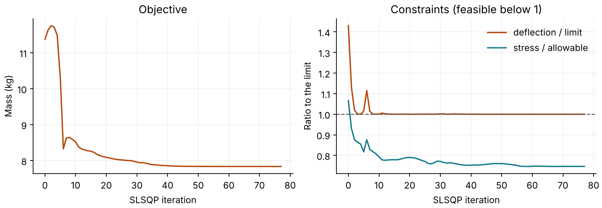

Project 4: Lightest Heat-Spreader Plate for a Sealed Electronics Enclosure
Kangzheng Liu · OptiForge · MAE 598/494 Design Optimization
Official brief: Project 4: PDE-Constrained Design Optimization
Structure: heat sink for a power chip (from the menu) · Nonlinear component: N2, surface radiation · Code: repository
Summary
A sealed, fanless electronics enclosure has no vents, so its aluminium lid is also its heat sink. The lid here is a 300 × 200 mm plate with a 20 W power module and a 1.5 W optical transceiver mounted on the inside. The outside loses heat to 40 °C air by natural convection and radiation. I chose the thickness of each 12.5 mm tile of the plate (384 variables, 1 to 8 mm) to minimize mass while keeping the module at or below 85 °C and the transceiver at or below 62 °C.
- The optimized plate weighs 231.6 g and meets both limits. The uniform 2 mm starting plate weighs 324 g and violates both, with the module at 90.9 °C.
- No uniform plate is feasible. Thickening the plate cools the module but warms the transceiver. The thinnest uniform plate that satisfies the module constraint is 2.80 mm (454 g), and it leaves the transceiver at 64.4 °C.
- Radiation carries 52% of the heat, so the state equation is nonlinear in temperature. It is solved by Newton's method in 4 iterations, and the gradients of both constraints come from the adjoint at the converged state in 0.038 s, against 14 s for finite differences.
- The nonlinearity changes the design. If radiation is linearized about ambient, the optimizer needs 340 g, 47% more. Checked with the nonlinear model, that plate is 2.8 K and 1.9 K below the two limits, so the extra metal is not needed.
- The solver passes all 17 checks of the verification ladder (Section 3).
- Projects 1 to 3 studied the linear equilibrium solve inside a topology-optimization loop. This project keeps the loop and changes what was simple there: the state equation is nonlinear and the constraints are not self-adjoint. Section 8 checks each earlier result against this problem.
Loading the 3D comparison…
Left: the uniform starting plate. Right: the optimized plate. Drag to rotate (the two views share one camera) and scroll to zoom. Plan dimensions are to scale; thickness is drawn 5 times too large by default, and the slider changes that factor. The flat mounting face is at the bottom. Colour is the plate temperature from the nodal values of the finite element solution; each element is drawn as four triangles around its centre value, which is what the bilinear shape functions give there. The play button steps the right panel through the optimizer's iterations.
1. Structure and formulation
Why it matters. Outdoor radio units, LED drivers and similar equipment are sealed against dust and water, so they cannot use fans. All heat leaves through the enclosure walls, and the wall thickness sets how well heat spreads from a hot component to the rest of the surface. A thicker wall runs the hot component cooler but adds weight and, as shown below, warms the neighbouring parts.
Setup. The plate is machined from 8 mm stock, with pockets cut from the outer face. Components sit on the flat inner face.
| Quantity | Value | Source |
|---|---|---|
| Plate | 300 × 200 mm, aluminium 6061-T6, \(k=167\) W/(m·K), \(\rho=2700\) kg/m³ | Data sheet [3] |
| Surface | Anodized, emissivity \(\varepsilon=0.82\) | [2], Table A.11 |
| Convection | \(h=6\) W/(m²·K), outer face only | Free convection in gases is 2 to 25 W/(m²·K) [2, Table 1.1]; plate correlations at a 30 K rise give 5 to 6 [2, Ch. 9] |
| Ambient and surroundings | \(T_\infty=40\) °C | Hot-day design assumption |
| Power module | 20 W on 25 × 25 mm, mounting face at most 85 °C | Assumed device: junction limit 125 °C, less 20 W × 1.5 K/W from junction to plate, less a 10 K margin |
| Optical transceiver | 1.5 W on 25 × 25 mm, plate under it at most 62 °C | Commercial-grade case rating 70 °C at 1.5 W [4], less 1.5 W × 4 K/W for the cage and pad (assumed), less a 2 K margin |
| Thickness | 1 to 8 mm | Stock plate; 1 mm is the thinnest floor I assume can be machined |
Design variables. One variable per tile, \(x_j\in[0,1]\), \(j=1,\dots,384\), with tile thickness
\[t_j = t_{\min} + (t_{\max}-t_{\min})\,x_j ,\qquad t_{\min}=1\ \text{mm},\quad t_{\max}=8\ \text{mm}.\]
Objective and constraints. With \(\theta=T-T_\infty\) the temperature rise, \(A_{\text{tile}}\) the tile area, and \(\mathcal N_c\) the 25 mesh nodes under component \(c\):
\[\begin{aligned} \min_{\mathbf x}\quad & m(\mathbf x)=\rho A_{\text{tile}}\sum_j t_j \\ \text{s.t.}\quad & g_c(\mathbf x)=\mathrm{KS}\!\left(\frac{\theta_i}{\theta_c^{\max}},\ i\in\mathcal N_c\right)-1\le 0,\qquad c\in\{\text{module},\ \text{transceiver}\},\\ & 0\le x_j\le 1 , \end{aligned}\]
where \(\theta^{\max}_{\text{module}}=45\) K, \(\theta^{\max}_{\text{transceiver}}=22\) K, and \(T\) solves the state equation of Section 2. The peak temperature under a component is not differentiable where the hottest node changes, so each constraint uses the Kreisselmeier–Steinhauser aggregate [5]
\[\mathrm{KS}(\mathbf a)=a_{\max}+\frac1{\rho_{KS}}\ln\sum_i e^{\rho_{KS}(a_i-a_{\max})},\qquad a_{\max}\le \mathrm{KS}(\mathbf a)\le a_{\max}+\frac{\ln N}{\rho_{KS}} .\]
With \(\rho_{KS}=200\) and \(N=25\) the aggregate overestimates the peak by at most 0.72 K for the module and 0.35 K for the transceiver. I report the true peaks next to the aggregate.
2. Analysis model
Governing equation. The plate is thin and conducts well, so its temperature is uniform through the thickness: the Biot number \((h+h_r)\,t/k\) is 0.0006 at the thickest point. An energy balance on a column of plate gives the fin equation in two dimensions,
\[-\nabla\!\cdot\!\big(k\,t\,\nabla T\big)+h\,(T-T_\infty)+\varepsilon\sigma\,(T^4-T_\infty^4)=q \ \ \text{in }\Omega,\qquad k\,t\,\frac{\partial T}{\partial n}=0\ \ \text{on }\partial\Omega ,\]
with \(T\) in kelvin, \(t(x,y)\) the thickness, and \(q\) the heat flux from the components (\(P_c/A_c\) under each one, zero elsewhere). Conduction is in the plane, and the surface terms act on the outer face. The \(T^4\) term makes the equation nonlinear.
Discretization. Four-node bilinear rectangles on a 48 × 32 grid (6.25 mm elements, 1617 unknowns). Each design tile covers 2 × 2 elements. The discrete residual is
\[\begin{aligned} &\mathbf R(\mathbf T;\mathbf t)=\mathbf K_c(\mathbf t)\,\mathbf T+h\,\mathbf M\,(\mathbf T-T_\infty\mathbf 1)+\mathbf r(\mathbf T)-\mathbf Q=\mathbf 0,\\ &\mathbf K_c=\sum_e k\,t_e\,\mathbf k_0,\qquad r_i=\varepsilon\sigma\!\int_\Omega N_i\,(T_h^4-T_\infty^4)\,dA , \end{aligned}\]
where \(\mathbf k_0=\int\nabla N^{\mathsf T}\nabla N\,dA\) is the element conduction matrix for unit \(k\,t\), \(\mathbf M=\int N^{\mathsf T}N\,dA\), and \(T_h=\sum_i N_iT_i\). The radiation integrals use 3 × 3 Gauss points, which is exact for these polynomials. Newton's method starts from \(T_\infty\) and uses the tangent
\[\mathbf K_T=\frac{\partial\mathbf R}{\partial\mathbf T}=\mathbf K_c+h\,\mathbf M+\varepsilon\sigma\!\int_\Omega 4\,T_h^3\,N^{\mathsf T}N\,dA ,\]
which is symmetric positive definite. It stops when \(\lVert\mathbf R\rVert/\lVert\mathbf Q\rVert<10^{-10}\). Global matrices are sparse (scipy.sparse), and the solver is my own code in plate.py; no FE library is used.
Assumptions.
- Temperature is uniform through the thickness (small Biot number). Spreading through the thickness directly under the module is ignored.
- \(h\) is constant. In natural convection it grows roughly as \(\theta^{1/4}\).
- The surface is gray and diffuse and sees large surroundings at \(T_\infty\).
- Only the outer face exchanges heat. The inner face faces the electronics and is taken as adiabatic, as are the plate edges.
- Steps between tiles do not add surface area.
- Each component is a uniform heat flux on its footprint. Interface resistances are accounted for in the limits, not in the model.
Mesh check. The optimized design re-analysed on coarser and finer meshes:
| Element size (mm) | Elements | Module peak (°C) | Transceiver peak (°C) |
|---|---|---|---|
| 12.5 | 384 | 84.72 | 61.87 |
| 6.25 | 1536 | 84.72 | 61.88 |
| 3.125 | 6144 | 84.77 | 61.88 |
| 1.5625 | 24576 | 84.77 | 61.88 |
The peaks change by less than 0.1 K, which is smaller than the KS margin.
3. Verification
All checks run from verify.py each time the results are regenerated.
| Test | Quantity | Solver | Exact | Rel. error | ||
|---|---|---|---|---|---|---|
| V1 | Linear fin, exact solution | base temperature rise (K) | 171.3215 | 171.322 | 2.9e-06 | pass |
| V1 | Linear fin, exact solution | tip temperature rise (K) | 103.1434 | 103.1439 | 4.6e-06 | pass |
| V2 | Manufactured solution, mesh refinement | L2 error convergence rate | 1.992576 | 2 | 3.7e-03 | pass |
| V3 | Global heat balance | heat leaving the plate, uniform 2 mm (W) | 21.5 | 21.5 | 6.3e-14 | pass |
| V3 | Global heat balance | heat leaving the plate, random thickness (W) | 21.5 | 21.5 | 4.9e-13 | pass |
| V4 | Zero modes of the conduction matrix | number of zero eigenvalues | 1 | 1 | 0.0e+00 | pass |
| V4 | Mirror the plate in x | largest temperature difference (K) | 3.979039e-13 | 0 | 1.0e-14 | pass |
| V4 | Rotate the plate by 90 degrees | largest temperature difference (K) | 3.979039e-12 | 0 | 1.0e-13 | pass |
| V5 | Uniformly heated radiating plate | plate temperature (K) | 367.3934 | 367.3934 | 2.0e-15 | pass |
| V5 | Radiating fin, energy first integral | base heat flow (W/m) | 249.9998 | 250 | 8.4e-07 | pass |
| V5 | Newton's method on the design model | observed convergence order | 1.975162 | 2 | 1.2e-02 | pass |
| V5 | Residual as the gradient of the potential | directional derivative of the potential | 343.1944 | 343.1944 | 9.0e-10 | pass |
| V6 | Adjoint vs central difference, nonlinear model | directional derivative of g_chip (worst of 3 directions) | 0.01760666 | 0.01760666 | 3.2e-08 | pass |
| V6 | Adjoint vs central difference, nonlinear model | directional derivative of g_optic (worst of 3 directions) | 0.02925955 | 0.02925955 | 3.1e-08 | pass |
| V6 | Adjoint vs central difference, linearized model | directional derivative of g_chip (worst of 3 directions) | -0.0119779 | -0.0119779 | 1.6e-07 | pass |
| V6 | Adjoint vs central difference, linearized model | directional derivative of g_optic (worst of 3 directions) | 0.0003993534 | 0.0003993542 | 2.2e-06 | pass |
| V6 | Self-adjoint case, Project 1 formula | largest difference in the compliance sensitivity | 1.196099e-09 | 0 | 1.6e-12 | pass |
Where the exact value is zero, the error is the difference divided by the largest value of the quantity.
Where the exact answers come from:
V1, linear fin. A strip of constant thickness with heat flow \(q'\) per unit width entering at \(x=0\), an insulated tip, and convection only obeys \(k\,t\,\theta''=h\,\theta\). With \(m=\sqrt{h/(k\,t)}\), the solution is \(\theta(x)=q'\cosh\!\big(m(L-x)\big)/\big(k\,t\,m\sinh mL\big)\) [2, Ch. 3].
V2, manufactured solution. I picked \(\theta^\star=\theta_0\cos(\pi x/L_x)\cos(\pi y/L_y)\), which has zero flux on all edges, and a thickness \(t=t_0(1+x/L_x)\). Substituting into the full equation, including the \(T^4\) term, gives the source \(q\) that makes \(\theta^\star\) exact. The \(L_2\) error of bilinear elements should fall as the square of the element size; the measured slope is 1.99.
V3, heat balance. The shape functions sum to one, so summing all rows of \(\mathbf R=\mathbf 0\) gives heat out equal to heat in.
V4, zero modes and invariance. A uniform temperature conducts no heat, so \(\mathbf K_c\) must have exactly one zero eigenvalue. This is the thermal counterpart of a rigid-body mode. Mirroring or rotating the plate together with its thickness field and loads must return the same temperatures.
V5, radiation. (a) A plate heated uniformly with radiation only stays uniform at \(T=(T_\infty^4+q/\varepsilon\sigma)^{1/4}\). (b) For a fin with radiation only, multiplying \(k\,t\,T''=\varepsilon\sigma(T^4-T_\infty^4)\) by \(T'\) and integrating from the base to the insulated tip gives an exact relation between the base heat flow and the two end temperatures,
\[q'^2=2\,k\,t\,\varepsilon\sigma\left[\frac{T_0^5-T_L^5}{5}-T_\infty^4\,(T_0-T_L)\right].\]
I apply \(q'\), read \(T_0\) and \(T_L\) from the solver, and compare the right-hand side with the applied value. (c) Newton's residuals on the design model are 1.1e-02, 5.3e-05, 1.4e-09, 1.4e-13, an observed order of 1.98. (d) The residual is the gradient of the potential \(\Pi\) given in Section 8, so a central difference of \(\Pi\) along a random direction must equal \(\mathbf R^{\mathsf T}\mathbf v\). This checks the radiation term of the residual independently of the tangent.
V6, gradients. See Section 4. The last row is the self-adjoint special case discussed in Section 8.

4. Sensitivities
Adjoint. A constraint depends on the design only through the temperature, \(g=g(\mathbf T(\mathbf t))\), and \(\mathbf T\) is defined implicitly by \(\mathbf R(\mathbf T;\mathbf t)=\mathbf 0\). Differentiating the residual gives \(\mathbf K_T\,d\mathbf T/dt_e=-\partial\mathbf R/\partial t_e\). Introducing the adjoint \(\boldsymbol\lambda\) removes the need to solve this for every element:
\[\mathbf K_T^{\mathsf T}\boldsymbol\lambda=-\left(\frac{\partial g}{\partial\mathbf T}\right)^{\mathsf T}, \qquad \frac{dg}{dt_e}=\boldsymbol\lambda^{\mathsf T}\frac{\partial\mathbf R}{\partial t_e} =k\,\boldsymbol\lambda_e^{\mathsf T}\mathbf k_0\mathbf T_e .\]
Only the conduction matrix depends on the thickness, so \(\partial\mathbf R/\partial t_e=k\,\mathbf k_0\mathbf T_e\) involves a single element. The chain rule to the design variables is \(dg/dx_j=(t_{\max}-t_{\min})\sum_{e\in\text{tile }j}dg/dt_e\). For the KS constraint, \(\partial g/\partial T_i=w_i/\theta^{\max}_c\) with \(w_i=e^{\rho_{KS}a_i}/\sum_l e^{\rho_{KS}a_l}\) on the component's nodes and zero elsewhere.
The nonlinear solve does not need to be differentiated step by step. By the implicit function theorem only \(\mathbf K_T\) at the converged temperature matters. \(\mathbf K_T\) is symmetric and its factorization from the last Newton step is reused, so each constraint gradient costs one back-substitution. \(\boldsymbol\lambda\) is the Lagrange multiplier of the state equation in the KKT conditions of the full problem. The mass is explicit: \(\partial m/\partial x_j=\rho A_{\text{tile}}(t_{\max}-t_{\min})\). The linearized model of Section 6 uses the same formulas with a constant \(\mathbf K_T\).
Gradient check. Directional derivatives \(\nabla g\cdot\mathbf v\) from the adjoint against central differences, at a random design, for three random directions per constraint (worst case shown). The design has one kind of variable, tile thickness.
| Check | Quantity | Adjoint | Central difference | Rel. error | |
|---|---|---|---|---|---|
| Adjoint vs central difference, nonlinear model | directional derivative of g_chip (worst of 3 directions) | 0.01760666 | 0.01760666 | 3.2e-08 | pass |
| Adjoint vs central difference, nonlinear model | directional derivative of g_optic (worst of 3 directions) | 0.02925955 | 0.02925955 | 3.1e-08 | pass |
| Adjoint vs central difference, linearized model | directional derivative of g_chip (worst of 3 directions) | -0.0119779 | -0.0119779 | 1.6e-07 | pass |
| Adjoint vs central difference, linearized model | directional derivative of g_optic (worst of 3 directions) | 0.0003993534 | 0.0003993542 | 2.2e-06 | pass |
In the Taylor test (right panel of the figure in Section 3) the central-difference error falls as \(\epsilon^2\) (fitted slope 2.07) down to about \(10^{-8}\), then rises again from round-off. The largest error in the table belongs to a direction along which the derivative is small, so round-off in the difference is relatively larger.
Cost. For the 384 variables, one adjoint evaluation (Newton solve plus both constraint gradients) takes 0.038 s. Forward differences need 385 Newton solves and take 14.4 s, 380 times longer. The two gradients agree to 2e-06 of the largest component.
5. Optimization
Setup. SLSQP from SciPy [6] with the adjoint gradients. The variables are already in \([0,1]\). The objective is the mass divided by the mass of the full 8 mm plate (1296 g), and the constraints are written as \(g_c\le0\) with \(g_c\) of order one. The start is the uniform 2 mm plate.
Convergence. 89 iterations and 6 s. Both constraints start violated and are satisfied within the first few iterations; the rest of the run removes mass.

Other starts. Four starts reach the same design:
| Start | Iterations | Mass (g) | Module peak (°C) | Transceiver peak (°C) | Largest thickness difference from the first run (mm) |
|---|---|---|---|---|---|
| uniform 2 mm | 89 | 231.56 | 84.72 | 61.88 | 0.000 |
| uniform 1 mm (lower bound) | 72 | 231.56 | 84.72 | 61.88 | 0.014 |
| uniform 8 mm (upper bound) | 100 | 231.56 | 84.72 | 61.88 | 0.015 |
| random | 169 | 231.56 | 84.72 | 61.88 | 0.031 |
Active constraints and multipliers. Both temperature constraints are active. At the optimum 274 tiles sit at 1 mm, 2 at 8 mm, and 108 are in between. With SLSQP's multipliers \(\mu_{\text{module}}=0.442\) and \(\mu_{\text{transceiver}}=0.099\), the stationarity residual \(\nabla\hat m+\sum_c\mu_c\nabla g_c\) on the free tiles is at most 0.17% of \(\partial\hat m/\partial x_j\). On the tiles at the lower bound it is positive and on those at the upper bound it is negative, as the KKT conditions require.
A multiplier is the rate at which the optimal mass falls when its limit is relaxed. Since \(g_c=\theta/\theta_c^{\max}-1\),
\[\frac{dm^\star}{dT_c^{\max}}=-\frac{\mu_c\,m_{\text{full}}}{\theta_c^{\max}} .\]
- Power module: 12.7 g per kelvin. Re-optimizing with the limit raised by 0.2 K gives 12.3 g/K.
- Transceiver: 5.8 g per kelvin (re-optimized: 5.2 g/K).
In engineering terms, each kelvin of margin given up at the module is worth 5.5% of the plate's mass. The transceiver limit is active but cheap: removing it altogether saves only 3.0 g, and the transceiver would then sit at 62.8 °C.
What the optimizer did. It left most of the plate at 1 mm and built a mound under the module that tapers outwards, which spreads the 20 W over enough surface to bring the module down to its limit. The mound reaches further towards the middle of the plate, where there is more surface to feed, than towards the near edge. It stops well short of the transceiver, which gets a small pad of its own to spread its 1.5 W.
Why no uniform plate works. A thicker plate spreads the module's heat further and flattens the temperature field towards its mean of about 68 °C. That is below the module limit but above the transceiver limit, so the transceiver gets warmer as the plate gets thicker.
6. Nonlinear component (N2)
The nonlinear part of the model is the radiation term \(\varepsilon\sigma(T^4-T_\infty^4)\) in the state equation. It carries 11.3 of the 21.5 W. To see what the nonlinearity does to the design, I repeated the optimization with the usual linearization about ambient,
\[\varepsilon\sigma\,(T^4-T_\infty^4)\approx h_r\,(T-T_\infty),\qquad h_r=4\,\varepsilon\sigma T_\infty^3=5.71\ \text{W/(m}^2\text{K)},\]
which makes the state equation linear, and then checked that design with the nonlinear model.
| Radiation model used by the optimizer | Optimal mass (g) | Peaks in that model (°C), module / transceiver | Peaks of that design in the nonlinear model (°C) | Margin to the limits (K) |
|---|---|---|---|---|
| Nonlinear, \(\varepsilon\sigma(T^4-T_\infty^4)\) | 231.6 | 84.7 / 61.9 | 84.7 / 61.9 | 0.3 / 0.1 |
| Linearized, \(h_r(T-T_\infty)\) | 339.9 | 84.7 / 61.8 | 82.2 / 60.1 | 2.8 / 1.9 |

The linearized model asks for 108 g more aluminium (47%) and a different layout: a wider mound at the module, a 1 mm gap between the module and the transceiver, and a second mound at the transceiver that extends towards the far edge. In the nonlinear model that plate is cooler than it needs to be at both components.
The reason is that the true radiation coefficient \(\varepsilon\sigma(T^2+T_\infty^2)(T+T_\infty)\) grows with temperature. On the optimized plate it is 6.19 W/(m²·K) at the coldest point and 7.06 at the module, against 5.71 in the linearization. The linear model therefore underestimates the heat leaving everywhere, and most where the plate is hottest. A linear model also fixes the mean plate temperature: integrating the equation over the plate gives \(\bar\theta=P/\big((h+h_r)A\big)\) for every thickness field, 70.6 °C here, where the nonlinear solution has 68.4 °C. The linearized optimizer has to hold the transceiver that much further below the mean, and it can do so only by isolating the transceiver from the module and giving it its own fin area.
Without radiation at all the problem has no solution. Convection alone fixes the mean plate temperature at \(T_\infty+P/(hA)=99.7\) °C for every design, above both limits. The full 8 mm plate has the module at 105.9 °C.
7. Results
All values are from the nonlinear model.
| Initial, uniform 2 mm | Uniform 2.80 mm | Optimized | |
|---|---|---|---|
| Mass, objective (g) | 324.0 | 454.0 | 231.6 |
| Power module peak (°C), limit 85 | 90.9 ✗ FAIL | 84.9 ✓ pass | 84.7 ✓ pass |
| Constraint \(g\), power module (feasible if at most 0) | 0.1316 | 0.0000 | 0.0000 |
| Transceiver peak (°C), limit 62 | 63.1 ✗ FAIL | 64.4 ✗ FAIL | 61.9 ✓ pass |
| Constraint \(g\), transceiver (feasible if at most 0) | 0.0593 | 0.1150 | 0.0000 |
| Mean plate temperature (°C) | 68.5 | 68.5 | 68.4 |
| Heat leaving by radiation (W) | 11.3 | 11.2 | 11.3 |
The optimized plate is 29% lighter than the starting plate and 49% lighter than the uniform plate that satisfies the module constraint alone. Its true peaks are 0.28 K and 0.12 K below the limits; that small margin is the KS overestimate.
8. Relation to Projects 1 to 3
Projects 1 to 3 [7] looked at one thing from three sides: the equilibrium solve inside the topology-optimization loop of the MBB beam. Project 4 keeps that loop (design, state solve, sensitivities, update) on a different physical problem and changes the two things that were simple there. The code is new, but each earlier result has a counterpart here, and I checked each one.
Project 1, SIMP and OC. The plate is parameterized like the beam: \(\mathbf K_c=\sum_e t_e\,k\,\mathbf k_0\) is the SIMP stiffness with exponent \(p=1\). Intermediate thickness is physical, so no penalization is needed. Project 1 minimized compliance, which is self-adjoint: the adjoint is \(-\mathbf u\), the sensitivity \(-p\rho_e^{p-1}\mathbf u_e^{\mathsf T}\mathbf k_0\mathbf u_e\) needs no extra solve, and it is negative for every element, which is what the OC update relies on. The adjoint code of Section 4 reproduces this: for the thermal compliance \(\mathbf Q^{\mathsf T}\boldsymbol\theta\) of the linear model it returns \(-k\,\boldsymbol\theta_e^{\mathsf T}\mathbf k_0\boldsymbol\theta_e\) to round-off (last row of the ladder). The temperature constraints are different. At the optimum, thickening any of the 384 tiles cools the module, but for the transceiver only 176 tiles cool it and the other 208 warm it. Each constraint needs its own adjoint solve, and with gradients of mixed sign and two constraints OC does not apply, so I used SLSQP.
Project 2, conditioning of the state solve. Project 2 found two sources of ill-conditioning in \(K\): mesh refinement, which Jacobi scaling does not remove, and the stiffness contrast between solid and void, which it does. I repeated the measurement on the tangent matrix \(\mathbf K_T\) at the converged temperature, with CG run to a relative residual of \(10^{-6}\) as in Project 2.
| Matrix | Unknowns | \(\kappa\) | \(\kappa\) after Jacobi scaling | CG iterations | Jacobi-PCG iterations |
|---|---|---|---|---|---|
| Plate, uniform 2 mm, 12.5 mm elements | 425 | 701 | 638 | 61 | 52 |
| Plate, uniform 2 mm, 6.25 mm elements | 1,617 | 2,679 | 2,549 | 118 | 105 |
| Plate, optimized, 6.25 mm elements | 1,617 | 9,533 | 1,895 | 248 | 108 |
| Project 2 beam, optimized layout, \(E_{\min}=10^{-9}\) | 9,880 | 1.2e+12 | 1,131,810 | not converged in 5,000 | 1,201 |
Both mechanisms are present. Halving the element size multiplies \(\kappa\) by 3.8 on the uniform plate, and Jacobi scaling barely changes it. The 8:1 thickness contrast of the optimized plate raises \(\kappa\) by a factor of 3.6, and Jacobi scaling removes that: preconditioned CG needs 108 iterations, against 105 on the uniform plate. The magnitudes are far smaller than in Project 2, for two reasons. The contrast is 8:1 instead of \(10^9\):1. And every node loses heat to ambient, so the smallest eigenvalue cannot fall below about \((h+h_r)\) times the area of one element, 0.00048 W/K against the computed 0.00050. The beam had no such term, and its softest mode was a smooth deformation of the whole structure. This is why a sparse direct solve, and plain CG, are both adequate here.
Project 3, energy-trained network. Projects 2 and 3 wrote the equilibrium solve as the minimization of a potential energy, and Project 3 trained a network on that energy. The state equation here has the same form. It is the stationarity condition of
\[\Pi(\mathbf T)=\tfrac12\boldsymbol\theta^{\mathsf T}(\mathbf K_c+h\mathbf M)\boldsymbol\theta +\varepsilon\sigma\!\int_\Omega\Big(\tfrac15T_h^5-T_\infty^4\,T_h\Big)dA-\mathbf Q^{\mathsf T}\boldsymbol\theta , \qquad \nabla\Pi=\mathbf R ,\]
Its gradient is the residual (check V5 d) and its Hessian \(\mathbf K_T\) is positive definite, so it is convex. Newton's method minimizes \(\Pi\) with the exact Hessian and converges in four steps. Project 3 had only gradients of its energy and needed L-BFGS to approximate the curvature. One state solve here takes 36 ms, so I did not use a surrogate. Project 3 reached the same conclusion for the 2D beam, where the direct solve was about 3,534 times cheaper per design than training the network.
9. Bonus
Fully nonlinear (N2). The nonlinear component is a nonlinear state equation solved by Newton's method, with gradients from implicit differentiation at the converged state. It is checked against two radiation benchmarks with closed-form answers (V5 a and b), the Newton convergence order (V5 c), and finite differences (V6).
10. Limitations and AI use
Limitations.
- The convection coefficient is constant and the same over the whole face. A correlation \(h\propto\theta^{1/4}\) would add a second nonlinearity of the same kind and could be handled by the same Newton solver and adjoint.
- The plate has no fins. The design question here is how to spread heat in a wall of fixed area, not how to add area.
- Thickness changes in steps between tiles, with no limit on the step size.
- The thin-plate model ignores spreading through the thickness under the module, where the plate is 8 mm thick and the module is 25 mm wide. I did not check this against a 3D model.
- One steady load case at the hottest ambient. Material properties are constants.
- The module and transceiver limits rest on assumed device data (Section 1).
AI use. I worked with a coding agent (Claude). It proposed the structure and the numbers in Section 1, wrote the solver, the adjoint, the verification and optimization scripts, and the three.js viewer, and drafted the text of this page. The exact answers in the ladder are the closed forms written out in Section 3, so that they can be checked by hand independently of the code. Every row of that table is recomputed whenever the results are regenerated.
One bug the checks caught: in the first uniform-plate runs for the mesh check, Newton's method stalled on the 8 mm plate at a relative residual of \(1.5\times10^{-11}\), just above the tolerance of \(10^{-11}\), and reported failure. The linear terms of the residual were being applied to the absolute temperature (about 340 K) instead of the rise, so round-off in \(\mathbf K_c\mathbf T\) set a floor on the residual. The residual now uses \(\theta=T-T_\infty\), which is exact because \(\mathbf K_c\mathbf 1=\mathbf 0\) (check V4), and the tolerance is \(10^{-10}\). Newton's last residual is now about 1e-13.
Reproduction
Python 3.13.18, NumPy 2.5.3, SciPy 1.18.1. From the repository root:
python -m pip install -r projects/04_engineering_design/requirements.txt
python projects/04_engineering_design/src/run_all.py # about 1 min
This one command runs the verification ladder and all optimizations, writes site/assets/results.json, draws the figures, and rebuilds this page from report/report.template.md. Every number in the text, the tables and the 3D viewer is read from results.json.
References
- MAE 598/494, Project 4: PDE-Constrained Design Optimization.
- T. L. Bergman, A. S. Lavine, F. P. Incropera, and D. P. DeWitt, Fundamentals of Heat and Mass Transfer, 7th ed., Wiley, 2011.
- ASM Aerospace Specification Metals, Aluminum 6061-T6 data sheet.
- NVIDIA, MMA2L20-AR 25GbE SFP28 LR transceiver specifications: operating case temperature 0 to 70 °C, power consumption at most 1.5 W.
- G. Kreisselmeier and R. Steinhauser, "Systematic control design by optimizing a vector performance index," IFAC Proceedings Volumes, 12(7), 313–318, 1979.
- D. Kraft, "A software package for sequential quadratic programming," DFVLR-FB 88-28, 1988; implemented in
scipy.optimize.minimize(method="SLSQP"). - K. Liu, Project 1, 2 and 3 reports: SIMP–OC for the MBB beam, ill-conditioning of the equilibrium solve, energy-trained PINN.